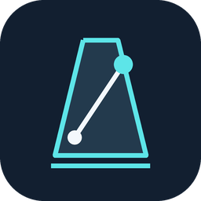

Church Click IEM
Windows PC에서 메트로놈을 제어하고, 같은 Wi-Fi에 연결한 휴대폰 브라우저에서 클릭을 듣습니다.
Windows v0.7.3
Windows x64 다운로드 소스 ZIPWindows PC 한 대, 휴대폰과 유선 이어폰, 팀 전용 Wi-Fi를 준비하세요. 이 페이지에서 실행 파일을 내려받고 PC에서 실행하면 휴대폰 수신 주소가 생성됩니다.
연결과 재생
- PC에서 실행 — Windows ZIP을 모두 압축 해제하고
ChurchClickIEM.exe를 엽니다. - 같은 Wi-Fi에 연결 — PC와 휴대폰을 팀 전용 Wi-Fi에 연결합니다.
- QR과 참가 코드 확인 — PC의 인이어 관리에서 Wi-Fi 인터페이스를 선택합니다. 휴대폰 카메라로 QR을 스캔하고 PC에 표시된 8자리 참가 코드를 입력합니다.
- 휴대폰 오디오 켜기 — 유선 이어폰을 연결하고 파트명을 입력한 뒤 오디오 켜기를 누릅니다. 낮은 볼륨부터 시작하세요.
- PC에서 시작 — 설정에서 BPM과 박자, 음표를 고르고 적용합니다. 예배 모드에서 시작을 누르면 연결된 휴대폰에서 클릭이 재생됩니다.
4·8·16·32분음표, 셋잇단음표, 첫 박 강조, 세트리스트와 기기별 지연 보정을 지원합니다.
문제 해결
- QR을 열어도 접속이 안 돼요
- PC 앱이 켜져 있는지, 같은 Wi-Fi인지, PC에서 선택한 주소가 해당 Wi-Fi 주소인지 확인하세요. 게스트 Wi-Fi는 기기 간 연결을 차단할 수 있습니다. Windows 방화벽에서 앱의 개인 네트워크 접근을 확인하세요.
- 참가 코드가 맞지 않아요
- PC 앱을 다시 열면 참가 코드가 바뀝니다. 인이어 관리에 표시된 최신 QR과 코드를 사용하세요. 시도 제한에 걸리면 1분 후 다시 입력하세요.
- 소리가 안 나거나 클릭이 어긋나요
- 휴대폰에서 오디오를 켜고 유선 이어폰과 미디어 볼륨을 확인하세요. 브라우저를 열어 둔 상태에서 두 기기의 클릭을 비교하고 먼저 들리는 기기에 추가 지연을 적용하세요.
PC 1대와 스마트폰 2대를 같은 Wi-Fi에 연결한 사용자 확인에서는 체감 지연 없이 동작했습니다. 수신기 최대 8대의 장시간 동시 재생은 실기기 확인이 남아 있습니다.
네트워크 사용 범위
제어기 인증과 참가 코드가 적용되어 있습니다. 기기 간 통신은 암호화되지 않으므로 팀 전용 Wi-Fi에서 사용하세요. 참가 코드는 팀원에게만 공유하고 공유기의 포트 포워딩으로 인터넷에 노출하지 마세요.